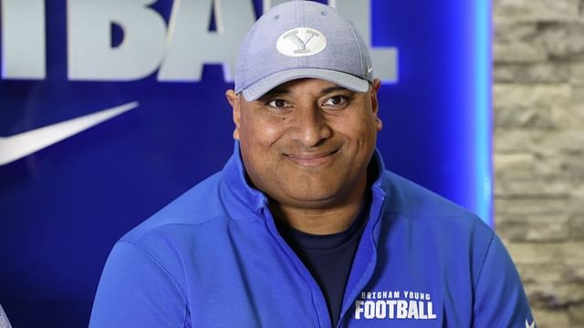
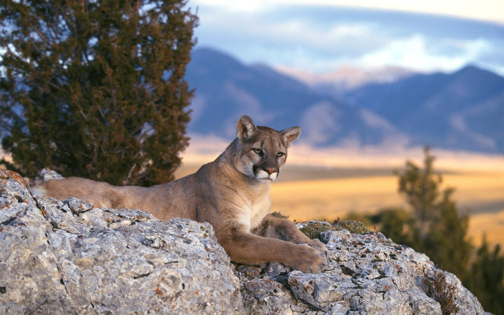
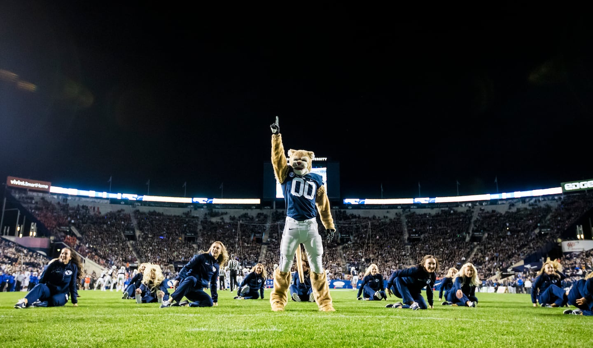

Introduction
The annual game football game between BYU and Utah is called the Holy War. It received this name since BYU is a religiously funded and supported school playing against the University of Utah which is the flagship state school in Utah and this is the biggest rivalry that exists for each of these teams and in this entire stereotypically religious state. Each year we receive a new installment of this highly contentious and spirited game. Watch this highlight from the end of the most recent Holy War played between BYU and Utah (November 2024).
- A list of the reasons why this game is awesome each year:
- BYU has an amazing coach named Kalani Sitake:
- Kalani grew up watching this rivalry and cheering for BYU, before then playing for BYU and now coaching the team
- Kalani just gave an awesome BYU devotional a few weeks ago
- Kalani has an awesome smile

- The jerseys and colors look incredible:
- The BYU Royal Blue is incredible
- The Utah Red is also incredible
- The full blue and red jerseys together are incredible

- The games are close and exciting:
- BYU won by just 9 points in the second most recent game
- BYU won by 1 point this most recent game with a field goal in the last 4 seconds to go from losing to winning after a desperate last minute drive
- BYU will win this next year, at home
- Because Cougars:
- gotta be called cougs
- are dangerous
- are good at football - they ended the year ranked #13 in the nation and they almost made it to the CFP playoff
- are good at basketball - they ended the year ranked #13 in the nation and they made it to the Sweet 16

Details
Check out the all time history of the Holy War, showing winners and the score of each game.
Isn't this awesome?!
Conclusion
BYU has cosmo. Mic drop. Period.
Utah Fan Section
Here is a comprehensive list of all of the reasons why Utah football could be considered better than BYU:
Thanks for reading my riGhTeOuS rant! I hope you enjoyed this important history lesson and that you are excited to cheer for BYU in the next Holy War, in October 2025!